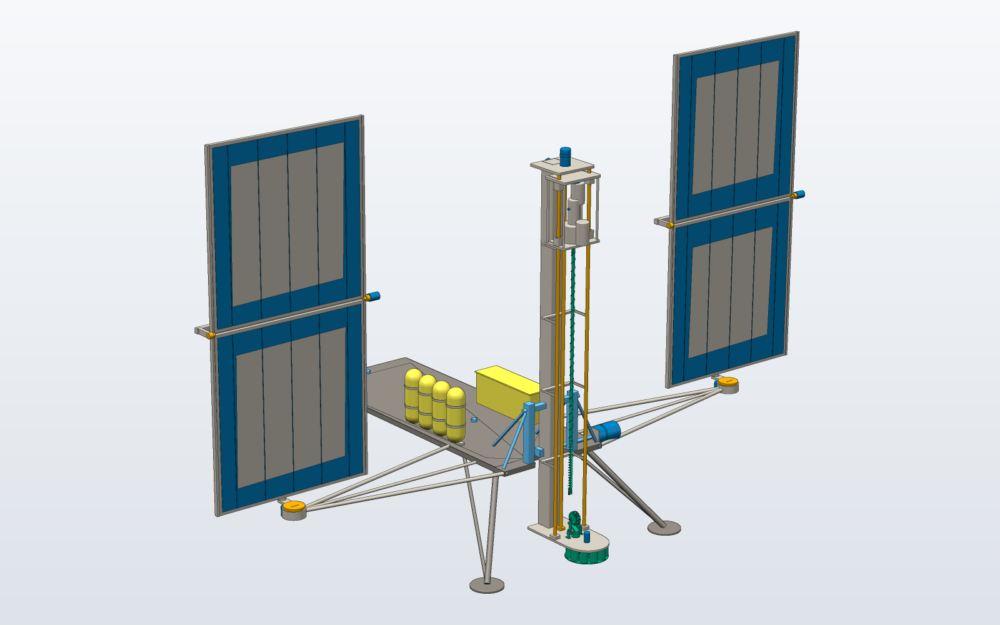
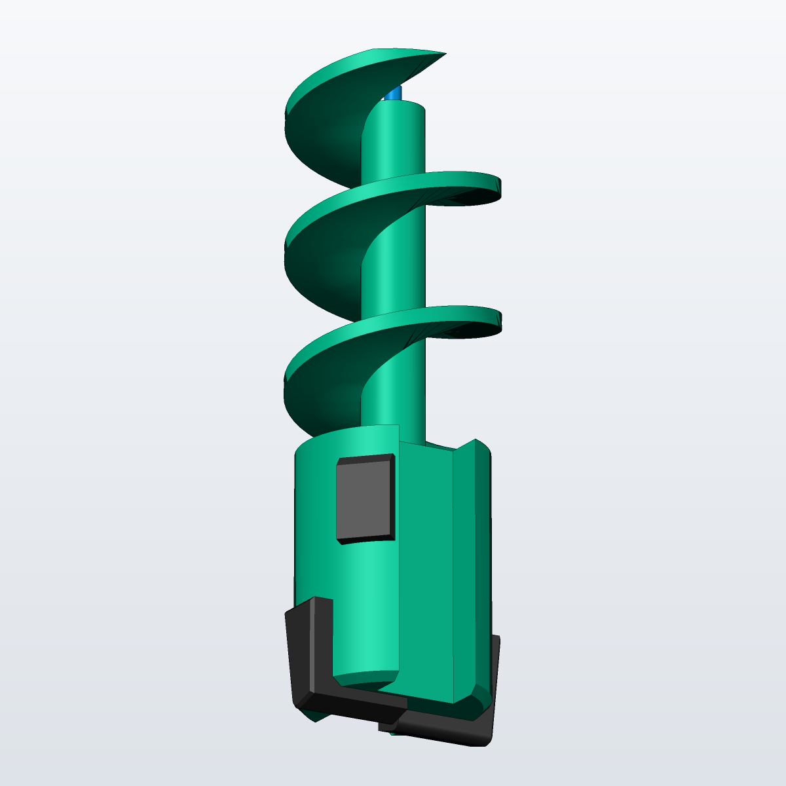
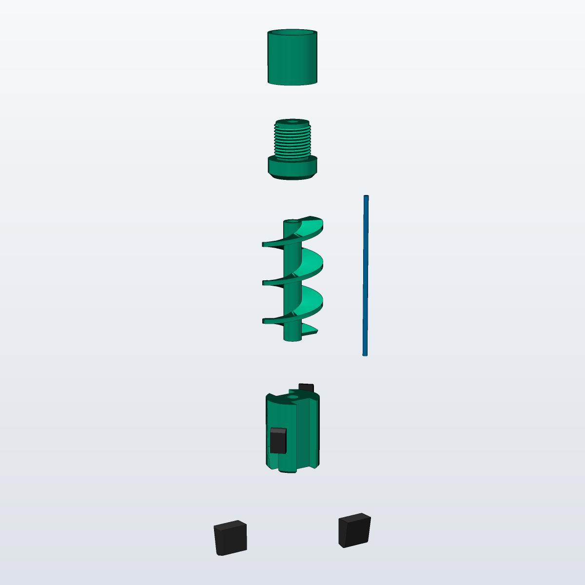
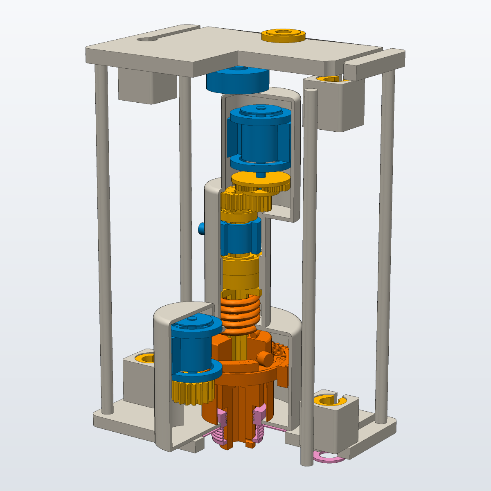
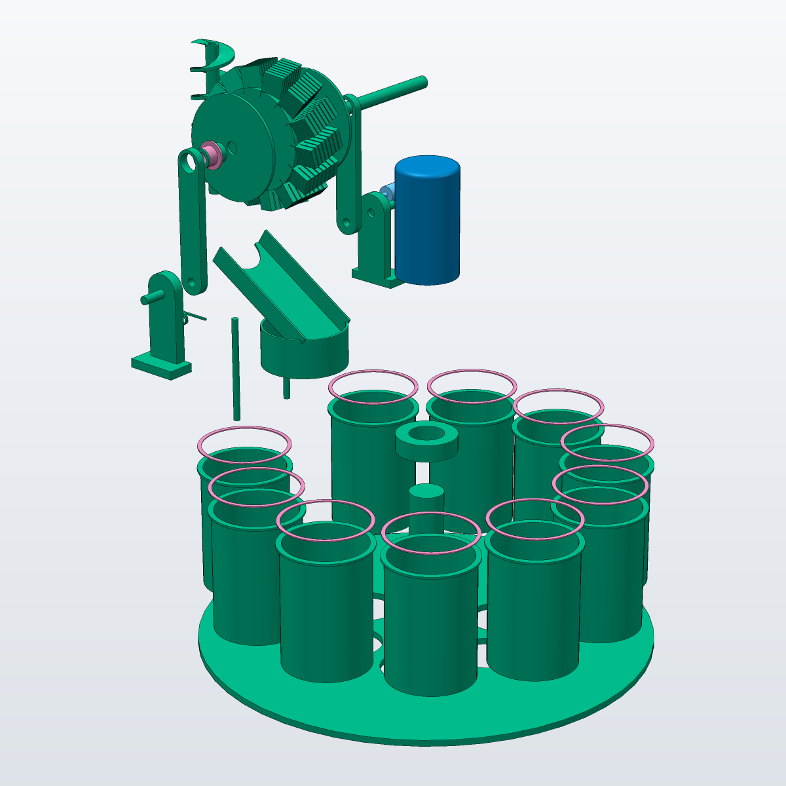
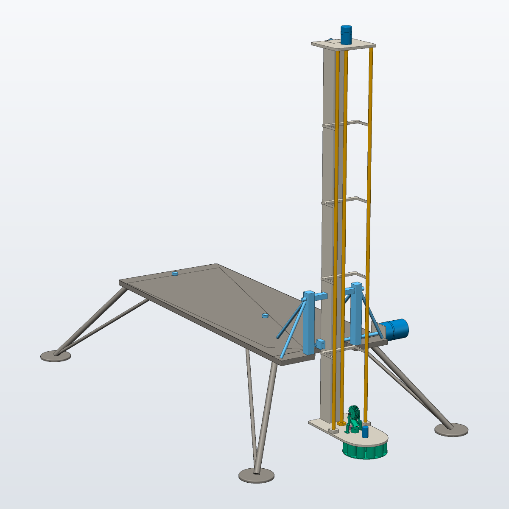
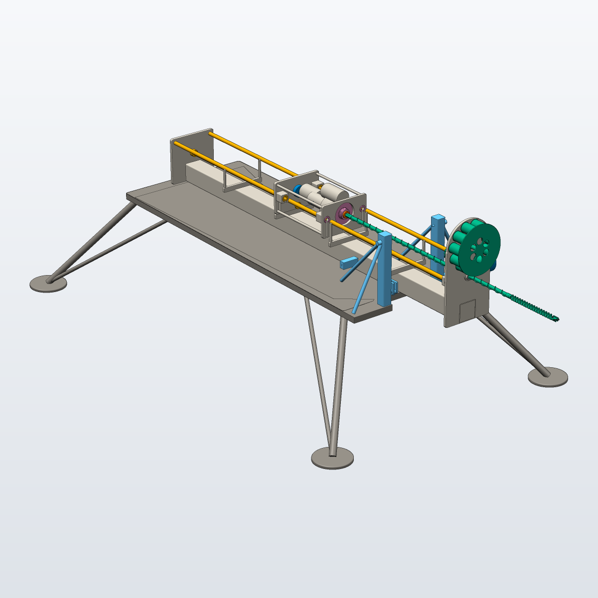

Design Showcase: a Rotary-Percussive Bite Drill for the Moon and Mars
How a 45 kg lander takes 1 m ice-bearing samples with no drilling fluid. The design story in five minutes; every parameter is based on or derived from physics.

The problem
Water ice in the top metre of the lunar south pole and of Mars’s northern plains is both a resource for future crews and a record of how volatiles got there. A science lander needs to bring it up in labelled depth intervals, without melting or sublimating the ice on the way. Terrestrial drilling relies on heavy rigs, tens of kN of weight on bit and drilling mud. None of that is available here.
This project designs the complete drill system, from the carbide cutter edge to the solar wings, for a 45 kg lander at two sites: the lunar south pole (sun ~1.5° above the horizon) and Mars at 68° N.
Four constraints that drive everything
is all the lander can push on the Moon before it lifts off. Ice-cemented regolith needs more than that to start rotary cutting.
lift ratio for cuttings on a spinning auger (Moon). Below 1, the flights cannot carry cuttings to the surface.
bit temperature above which ice in the cuttings sublimates into vacuum (Moon). On Mars the limit is melting, at 263 K.
sun elevation at the lunar south pole. Flat panels collect almost nothing, so the solar array has to stand up and track.
The lift-off limit is simply the lander’s weight in local gravity. The heat limit comes from the vapour pressure of ice [1]: above it, the ice in a 25 µm cuttings grain is lost to vacuum within one bite. At the lunar south pole the sun stays within a few degrees of the horizon [2, 3].
The design rule was no tuned numbers. A tuned number is a value picked or adjusted until the answer looks right: a fudge factor, a coefficient fitted to the result you want, or a size chosen by eye. None is used here. Every input carries one of four tags, each with its source:
- Environment fact: gravity, temperature, regolith strength and density [4, 5].
- Design choice: for example the 10 cm bite or the 150 rpm spindle speed, each with its stated reason.
- Literature coefficient: for example a friction coefficient, taken from a published range.
- Safety criterion: a factor of safety or margin from a standard [6].
Everything else (176 derived quantities in the design ledger) is calculated from well-known engineering models:
- Teale’s mechanical specific energy and the Detournay–Defourny drag-bit model for rock cutting [7–9]
- Lundberg’s one-dimensional stress-wave model for percussion [10]
- Hertz contact theory for the cutter edge [11]
- Goodman and Wahl fatigue checks for shafts and springs [12], and the IIW FAT classes for welds [13]
- Cycloidal cam motion and the 30° pressure-angle limit [14]
- AGMA gear contact stress and ISO 281 bearing life [15, 16]
- Euler–Bernoulli beam modes and Euler buckling for the drill string and mast [12, 17]
- Rankine earth pressure and Janssen silo pressure for packed cuttings [18, 19]
- Hertz–Knudsen sublimation of ice [1]
- ECSS motorisation factors and AIAA mass-growth allowances for the mechanisms [20, 21]
A second-by-second mission simulation then checks the whole design.
Key design decisions
1. The bit: two carbide chisels, not an oilfield PDC


- Concentrated load. With only 52 N on the Moon, the load has to go into as few edges as possible. Two WC-10Co chisel inserts give a line load of 271 N/mm, enough to crush the hardest layer by a factor of 36. In drag-bit cutting models, a cutter only removes rock once its contact stress beats the rock strength [8, 9]. With so little weight available, spreading it over many cutters would leave each one below that threshold.
- Edge sized by contact mechanics. The worst case is a blow landing on a basalt clast. A Hertz line-contact check sets the edge hone at R1.0 mm (FOS 2.1 on carbide). Carbide is very strong in compression but weak in tension. The −10° (negative) rake keeps the cutting edge in compression, the same reason oilfield PDC cutters are set at negative rake [22].
- Indexing. The bit turns 35° between blows, so each blow lands on fresh rock 6.3 mm from the last crater. Hitting the same crater again only re-grinds crushed material, which wastes energy and raises the specific energy of drilling [7, 10].
- Why not PDC. PDC cutters are made for continuous shearing with drilling fluid flowing over them. Their thin diamond layer chips under impact, and the cobalt binder degrades the diamond above about 750 °C if the cutter is not cooled [22]. Under 26 Hz hammering and with no fluid, solid WC-Co carbide is the safer choice. Percussive rock-drill bits use tungsten-carbide button inserts for the same reason [23].
2. The drill head: a cam-and-spring hammer around a hollow spindle

- Impact energy 2.25 J at 26 Hz; peak force 5.4 kN (1-D stress-wave model)
- Hammer spring: 6 mm 17-7PH wire, fatigue FOS 1.55; spring rate puts the hammer at 91 Hz, above 2× the blow rate so it re-seats every cycle
- Barrel cam: cycloidal rise, pressure angle 8.7° (limit 30°)
- Rotary drive: frameless BLDC through a 12/36/84 planetary and a 12T/24T spur; spur contact stress 923 MPa on carburised 9310
- Spindle bearing pair L10 104,061 h; WOB measured by a 500 N load cell
- Head stack 321 mm, sealed by labyrinth, PTFE lip seals and bellows
Rotary cutting alone stalls in ice-cemented regolith at this weight on bit. The hammer solves this by breaking rock with impact energy instead of steady force. The bit only has to stay seated, which takes 44 N, below the Moon set-point. A two-lobe barrel cam lifts the hammer, then drops it off a cliff in the cam profile onto the anvil. The rotary train runs through the hollow spindle beside it. The controller turns percussion on only when the measured torque and penetration rate show that rotary cutting has stopped working.
Each item in the card above comes from a standard method:
- Impact energy and force. The blow is modelled as a stress wave travelling through the hammer, anvil and bit [10]. Percussion is the established answer to low weight on bit in planetary drilling. Both Icebreaker and TRIDENT use rotary-percussive heads [24–26].
- Hammer spring. It is sized with the Wahl stress factor and checked against Zimmerli fatigue data using the Goodman criterion [12]. The spring’s natural frequency must stay above twice the blow rate. Otherwise the hammer cannot settle back onto the cam before the next lift.
- Barrel cam. A cycloidal rise has zero acceleration at both ends, so the follower sees no shock loads. The pressure angle is kept below the usual 30° limit so the follower does not jam [14].
- Gears and bearings. The spur gear contact stress is checked against the AGMA allowable [15]. The spindle bearing life follows ISO 281 [16].
- Margins. Structural factors of safety follow NASA-STD-5001 [6].
3. Auger + brushing station: drilling in bites


Bite drilling. With no drilling fluid, the only way out of the hole for cuttings is up the auger flights. A cutting climbs the flight only if the friction from the borehole wall, which the spin presses it against (centrifugal force), is larger than its weight. In other words, the lift ratio \mu_w \omega^2 r / g must exceed 1. Rotation speed is what governs dry auger conveying [24]. At the 150 rpm spindle speed this ratio is only 0.64 on the Moon and 0.28 on Mars. Continuous conveying would need more than 188 rpm on the Moon and 284 rpm on Mars.
Spinning that fast is the wrong trade for this drill. The speed was set low (0.16 m/s at the gauge) to limit frictional heat at the bit, which has to stay below 164 K on the Moon or the ice sublimates out of the sample [1]. A faster spin would also open the index angle between hammer blows. Dry augers in lunar regolith also tend to bind: the Apollo 15 crew had great difficulty drilling past about 1 m [24].
The drill therefore works in bites, like Icebreaker and TRIDENT [25, 26]. It drills a short interval, pulls the whole string out, and brushes the cuttings into a cup. The deep sampling flutes hold the cuttings from one bite. They fill completely after 12.2 cm of penetration, so the bite is set at 10 cm. Each bite is a depth-labelled sample, and the auger never has to carry cuttings the full depth, so it cannot choke.
Flights machined integral. Welded flights fail IIW weld-toe fatigue under hammer-wave inertia (2e+05 cycles against a 3.7e+07 requirement). Under the IIW recommendations, a fillet-welded attachment falls in fatigue class FAT 63, which is far too weak for this load [13]. A flight machined from the same bar, with a root fillet, has no weld toe. It gives a Goodman factor of safety of 2.2 [12].
Guide bushing. Without it, the string’s first lateral mode falls to 19 Hz, inside the blow-rate band. With it, the mode is 46 Hz. A structure driven near its natural frequency resonates, so every mode is kept out of a ±20 % band around each forcing frequency [17].
Passive brush. The brush is a 14-tuft wheel that meshes with the flights like a worm wheel, so the retracting auger drives it with no extra motor. The 0.1 mm bristles push at 59 kPa, 13× the cuttings’ passive pressure. The cuttings’ resistance is taken as Rankine passive earth pressure [18], using lunar regolith cohesion [4]. A 32° chute then delivers the cuttings into a cup sized for 120 % of one bite. Each bite has its own cup: 10 sealed cups ride on an indexing carousel under the mast foot plate, so every depth interval is kept as a separate, sealed sample. The chute is steeper than the wall-friction angle, so dry cuttings slide in any gravity. Brushing cuttings off the auger into a sample cup is also how Icebreaker delivers its samples [25].
4. Deployable side-mounted mast

- Spine 80x80x3 6061-T6 Al, the lightest of 64 feasible designs out of 240 searched (material × section × brackets × latch height)
- Stowed first mode 97 Hz against a 50 Hz launch requirement; M8 A-286 frangible bolts released by SMA actuators (low-shock, non-pyrotechnic)
- Deployed first mode 20–21 Hz over the stroke, placed between the cam and blow-rate bands
- Deploy actuator 108 N·m (ECSS motorisation factors) through a 100:1 strain-wave gear
- Bit position error 3.7 mm at 1 m depth
A 1.9 m mast does not fit on the lander upright for launch. It folds aft over the deck on a hinge, with two hold-downs carrying the 15 g launch load, and swings up on the surface. Mounting it on the side keeps the borehole clear of the lander’s own footprint and exhaust-disturbed soil. The price is that the lander tilts before it lifts, which costs some WOB margin (see the limitations below).
The reasons behind the card above:
- Launch stiffness. A stowed payload must have its first mode above the launcher’s minimum so that it does not couple with the launch-vehicle dynamics. Launch loads are taken as the larger of the quasi-static load and the Miles random-vibration estimate [27].
- Hold-down release. A shape-memory-alloy (SMA) actuator breaks a notched frangible bolt in tension. It produces far less release shock than a pyrotechnic bolt, which matters for the drill head’s bearings and sensors, and it can be tested and reset on the ground [28]. The bolt preload is sized with standard joint equations [12].
- Deployment. The deploy actuator is sized with the ECSS motorisation factors: twice the resistive torques (gravity, friction and harness) plus 1.25 times the inertial torque [20].
- Mass. All masses carry a 20 % mass-growth allowance [21], and structural factors follow NASA-STD-5001 [6].
- Deployed modes. These are kept between the rotary, cam and blow-rate bands, for the same resonance reason as the drill string [17].
5. Power: standing, tracking solar wings
All five array layouts were simulated against the real sun track at each site. The 2-axis tracking (azimuth + elevation) wings deliver 797 W on the Moon and 143 W on Mars (dust and the thin atmosphere included). That is at least twice the 73 W mission-mean load, so the battery never runs down during a mission. The array has to stand vertical and track because the polar sun moves around the horizon instead of rising overhead [2, 3]. Irradiance uses the measured solar constant [29]. On Mars, dust settling on the panels was measured by Pathfinder at about 0.3 % per day, and that loss is included [30].
Comparison with a field-tested prototype
Honeybee Robotics’ Icebreaker drill is the closest working prototype. Its field tests reported “1-1-100-100”: about 1 m in about 1 hour, with under 100 N on the bit and about 100 W [25]. No coefficient in this model was fitted to that benchmark.
| Metric | Icebreaker | Moon | Mars | vs benchmark |
|---|---|---|---|---|
| Depth (m) | 1.00 | 1.00 | 1.00 | meets |
| Mission time (h) | 1.00 | 0.96 | 0.76 | meets |
| WOB set-point (N) | 100 | 52 | 119 | Moon meets, Mars above |
| Drilling power (W) | 100 | 68 | 105 | Moon meets, Mars above |
The results are the same order of magnitude as the hardware. The Mars weight on bit is above 100 N by design. The set-point is lander weight / 1.4, and Mars gravity is 2.3× the Moon’s. Mars spends longer actually drilling (10 vs 7 min) because its ice-rich layers start shallower. The Moon mission is still longer overall, because the drill first has to warm from 100 K, which takes 19 min. The bite-by-bite results and the full telemetry are on the digital twin and control pages.
Engineering drawings
The views are hidden-line projections of the same B-rep solids exported as STEP. Dimensions come from the design parameters or are measured from those solids, so the drawings regenerate whenever the design changes.


Honest limitations and next steps
- The mast mode is close to a forcing band. The deployed mast’s first mode (20–21 Hz) sits only 2 % from the edge of the blow-rate band. The first changes to test are a stiffer spine or a small shift in the blow rate.
- Side mounting costs stability. The lander tips about its far legs before it lifts. The tilt margin at the WOB set-point is 1.15, against 1.4 for a centred drill.
- Mass. The rotating mast assembly weighs 25 kg, and the steel rails are the largest single item. Lighter rails or a composite spine are the obvious next trade.
- Sample transfer is slow. Brushing takes 87 s per bite (16 min per mission). It is limited by the low bristle force a 1.2 m cantilevered string can take.
- The models are uncalibrated. Rock-cutting specific energy and the heat partition come from literature ranges. The sweeps on the derivations page show their effect: Mars mission time ranges from 0.68 to 0.84 h. Drilling tests in a cryogenic vacuum chamber are the next step.
How it was built
A single parameter file feeds a chain of Python models: design derivations, solar geometry, terramechanics, the six-state controller simulation and parametric build123d CAD. They export STEP, GLB, still renders and the drawings above. This site and the PDF summary are generated from those outputs, and automated tests check the physics and the exports. Change one input, and every number, model, render and drawing regenerates.